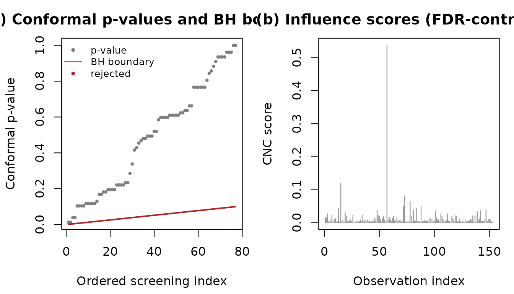
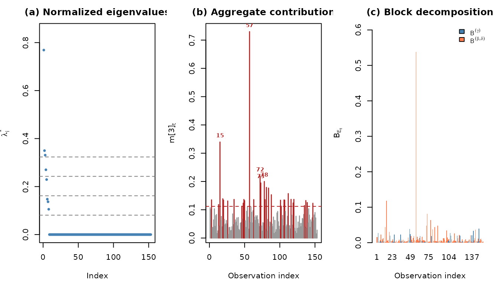
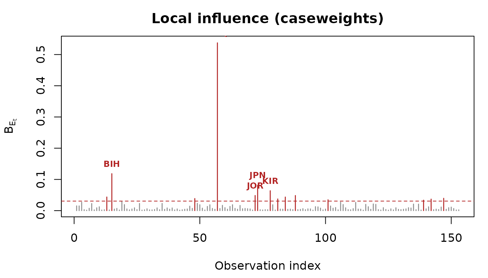

Conformal Local Influence Screening with clis
clis-intro.RmdMotivation
Classical local influence diagnostics rank observations by a curvature measure and ask the analyst to inspect an index plot for points that “stand out”. This workflow has two well-known weaknesses. First, it does not scale: with thousands of observations, the index plot becomes unreadable and the underlying eigenproblem becomes expensive. Second, it offers no control of the error rate: there is no principled threshold and no guarantee on the proportion of false declarations.
The clis package addresses both problems for zero-or-one inflated beta (BIc) regression models. It uses the conformal normal curvature of an observation as a non-conformity score inside a split-conformal testing procedure. The result is a per-observation conformal -value whose Benjamini-Hochberg adjustment controls the false discovery rate (FDR) at a level you choose, while running in linear time per observation after a single model fit.
A worked example
We use the bundled vaccination dataset: national DTP3
immunisation coverage proportions for 2022, with a point mass at one
(countries with complete coverage). This dataset ships with the package
so the vignette builds without external dependencies. The paper’s
applications use the ReadingSkills data from the
betareg package (one-inflated, small sample) and the
lungFunction data from the gamlss.data package
(one-inflated, large sample); the script
data-raw/application.R reproduces both, and
data-raw/README.md gives a runbook for all the paper’s
tables and figures.
library(clis)
vaccination <- load_vaccination()
str(vaccination)
#> 'data.frame': 153 obs. of 6 variables:
#> $ iso3c : chr "AGO" "ALB" "ARE" "ARG" ...
#> $ dtp3 : num 0.6 0.99 1 0.92 0.95 0.95 0.9 0.97 0.9 0.98 ...
#> $ ln_gdp: num 8.78 9.62 11.21 10.09 9.62 ...
#> $ urb : num 0.68 0.63 0.87 0.92 0.63 0.86 0.59 0.57 0.14 0.98 ...
#> $ ln_pop: num 17.4 14.8 16.1 17.6 14.8 ...
#> $ hdi : num 0.591 0.789 0.937 0.849 0.786 0.946 0.926 0.76 0.42 0.942 ...
mean(vaccination$dtp3 == 1) # fraction at the upper boundary
#> [1] 0.09803922We fit a one-inflated beta model with variable dispersion: the inflation probability depends on the Human Development Index, the conditional mean on log GDP and urbanisation, and the precision on log GDP and log population.
library(gamlss)
#> Loading required package: splines
#> Loading required package: gamlss.data
#>
#> Attaching package: 'gamlss.data'
#> The following object is masked from 'package:datasets':
#>
#> sleep
#> Loading required package: gamlss.dist
#> Loading required package: nlme
#> Loading required package: parallel
#> ********** GAMLSS Version 5.5-0 **********
#> For more on GAMLSS look at https://www.gamlss.com/
#> Type gamlssNews() to see new features/changes/bug fixes.
fit <- gamlss(
dtp3 ~ ln_gdp + urb,
sigma.formula = ~ ln_gdp + ln_pop,
nu.formula = ~ hdi,
family = gamlss.dist::BEOI,
data = vaccination,
control = gamlss.control(trace = FALSE)
)Screening with FDR control
A single call performs the whole screening procedure.
res <- clis_screen(fit, alpha = 0.1, seed = 1)
res
#> Conformal Local Influence Screening
#> Scheme: caseweights
#> Score: B_Et
#> Target FDR: 0.1
#> Observations: 153 (76 calibration, 77 screening)
#> Declared influential: 0 (FDR <= 0.1)The influential_global component gives the indices
declared influential at the chosen FDR level. We can visualise the
conformal
-values
against the Benjamini-Hochberg boundary and the influence scores:
plot_clis(res)
Block decomposition
Because the BIc information matrix is block diagonal between the
inflation parameters and the mean/precision parameters, the influence of
each observation decomposes additively into a part attributable to the
inflation submodel and a part attributable to the
conditional-mean/precision submodel. The summary method
reports this attribution for the declared set.
summary(res)
#> Conformal Local Influence Screening -- summary
#>
#> Conformal Local Influence Screening
#> Scheme: caseweights
#> Score: B_Et
#> Target FDR: 0.1
#> Observations: 153 (76 calibration, 77 screening)
#> Declared influential: 0 (FDR <= 0.1)Classical CNC panels
For comparison with the traditional workflow, the classical conformal normal curvature panels are available:
info <- bic_info(fit)
delta <- delta_caseweights(fit)
cnc <- cnc_matrix(delta$Delta, info$info_inv)
sc <- cnc_scores(cnc)
dec <- cnc_block_decomp(delta, info)
plot_cnc_panels(cnc, sc, dec)
Perturbation schemes
Four schemes are available, each targeting a different structural aspect of the model. To screen specifically for observations that drive the heteroscedastic precision structure, use the precision-covariate scheme:
res_prec <- clis_screen(fit, scheme = "preccovar", p = 2, alpha = 0.1, seed = 1)
res_prec
#> Conformal Local Influence Screening
#> Scheme: preccovar
#> Score: B_Et
#> Target FDR: 0.1
#> Observations: 153 (76 calibration, 77 screening)
#> Declared influential: 0 (FDR <= 0.1)A practical workflow
In practice the recommended sequence is: (1) fit the model; (2) look at the classical influence index plot to see the shape of the influence, exactly as in the traditional beta-regression diagnostics; (3) run the conformal screen to obtain an error-controlled declaration; (4) use the block decomposition to localise the effect; (5) repeat over a few seeds for a stable report.
# (2) classical index plot -- the familiar picture, no error control
plot_influence(fit, labels = vaccination$iso3c)
# (3) error-controlled screen at FDR 10%
res <- clis_screen(fit, alpha = 0.10, seed = 1)
# (5) stability across seeds: keep declarations that persist
decl <- lapply(1:10, function(s)
clis_screen(fit, alpha = 0.10, seed = s)$influential_global)
stable <- Reduce(intersect, decl)
vaccination$iso3c[stable]
#> character(0)The index plot answers “what does the influence look like?”; the screen answers “which points can I declare influential while controlling the false discovery rate?”; the intersection over seeds gives a deterministic report.
Why the guarantee holds
The conformal -values are marginally valid because, under the null that a screening point is exchangeable with the (clean) calibration set, the rank of its score is uniform. Bates and others (2023) showed that the resulting -values are positively dependent, so the Benjamini-Hochberg procedure controls the FDR. The only modelling assumption beyond the BIc fit is that the calibration set is predominantly free of influential points, which holds approximately whenever influential observations are rare.
Semiparametric fits
When the covariate effects are nonlinear, the submodels can use
penalised additive terms (for example P-splines via pb() in
gamlss). The screening procedure then works on the
penalised information J + S, and the false discovery rate
guarantee is unchanged: only the numerical scores differ. Pass
penalised = TRUE to clis_screen(), which
extracts the penalty with bic_penalty() and reports the
effective degrees of freedom.
fit_s <- gamlss(
dtp3 ~ pb(ln_gdp) + urb,
sigma.formula = ~ pb(ln_gdp) + ln_pop,
nu.formula = ~ pb(hdi),
family = gamlss.dist::BEOI,
data = vaccination,
control = gamlss.control(trace = FALSE)
)
res_s <- clis_screen(fit_s, alpha = 0.1, penalised = TRUE, seed = 1)
res_sThe reported effective degrees of freedom replace the nominal parameter count and split into an inflation part and a mean/precision part, mirroring the block decomposition of the influence scores.
Smoothing-parameter selection
The smoothing parameters are chosen by the outer criterion of the
gamlss fit (REML or GCV). For the false discovery rate
guarantee to hold exactly, the smoothing parameter should not break the
exchangeability of the calibration scores: selecting it on the
calibration split, or on a separate auxiliary split, is sufficient.
Selecting it on the full sample introduces only a mild dependence
through a low-dimensional global quantity, whose effect on the realised
FDR is negligible in practice. REML is the more stable default; GCV can
undersmooth at small sample sizes.